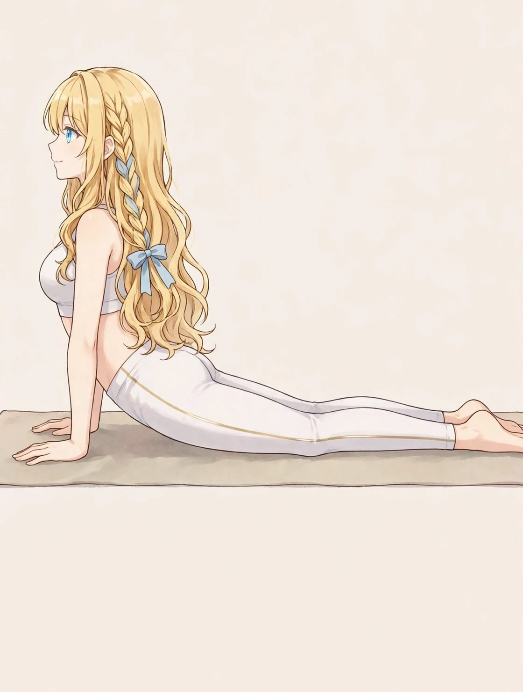
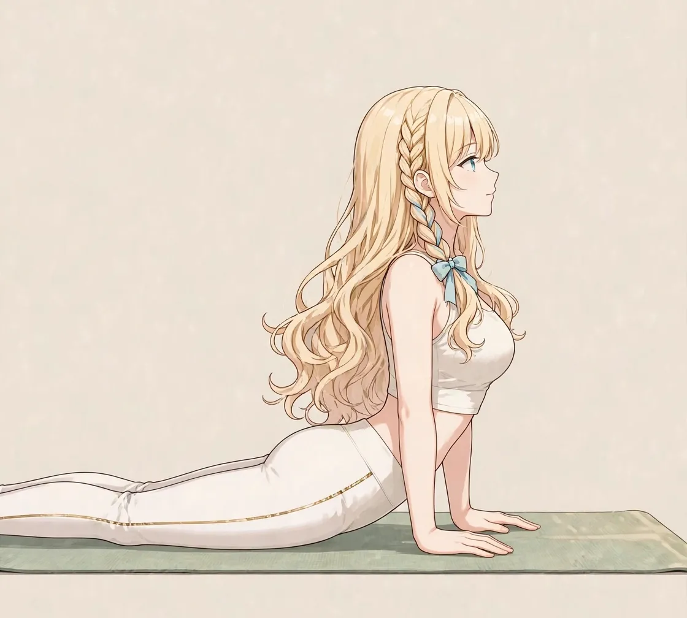

コブラのポーズ


うつ伏せから胸を持ち上げる、やさしい後屈のポーズです。肘を軽く曲げた低い形から始めるのが基本で、背中側の筋肉を使う感覚がつかめます。
ポーズのやり方
- マットにうつ伏せになり、両脚を後ろへ伸ばして足の甲を床につけます。脚は腰幅程度に開きます。
- 両手を肩の下あたりに置き、肘は体に寄せて後ろへ向けます。
- 息を吸いながら、背中の力で胸と頭をゆっくり持ち上げます。肘は軽く曲げたままにします。
- 恥骨は床につけたまま、視線は正面かやや上へ。肩は耳から遠ざけます。
- 3〜5呼吸キープしたら、息を吐きながらゆっくり下ろします。
意識するポイント
- 腕の力だけで持ち上げず、背中側の筋肉を使う意識で
- 腰を反らせるのではなく、胸を前へ伸ばすイメージで
- 肩をすくめないよう、肩甲骨を背中側へ下ろす
軽減法（初心者向け）
肘を床につけたスフィンクスの形にすると、腰への負担が少なく取り組めます。持ち上げる高さは低くて構いません。
注意点
腰に痛みや強い張りがある場合は、高さを低くするか中止してください。妊娠中の方や、お腹まわりの手術後は避けてください。
こんな場面で
床のポーズの流れの始まりや、太陽礼拝の中の後屈として。デスクワークの合間のおうちヨガにも取り入れやすいポーズです。